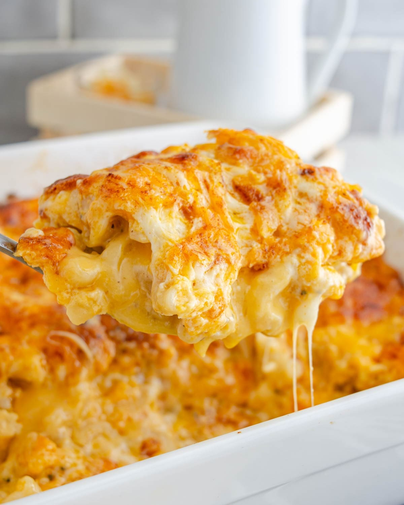

Macaroni and Cheese

Gooey Delicious Macaroni and Cheese
This quick and easy recipe for macaroni and cheese will leave you and your guests speechless. Thsi dish is perfect for any get togtehr
as well as a perfect side dish for any holiday dinner. Made with lots of cheese, this rich and delicious side will sure to be the star of the night
Ingredients
- Macaroni pasta
- Cheddar Cheese
- Colby Jack Cheese
- Velveeta Cheese
- Mexican Cheese Blend
- Flour
- Butter
- Salt
- Pepper
- Garlic Powder
- Paprika
- Milk
- Sour Cream
Steps:
- Cook your pasta shells in boiling water for 15 minutes or until the pasta is al dente
- Start on the cheese sauce. In another pan, cook 4 tablespoons of butter and let it melt. Once the butter is melted in the pan, sprinkel 4 tablespoons of flour into the butter and stirk
- Let the mixture cook out for about 5 minutes on low or until the roux "butter and flour mixture" becomes golden brown in color
- Once the roux is brown enough, start pouring in th emilg one 1/2 cup at a time, and we will 3 cups. keep stirring the roux and milk mixture
- The sauce will start to thicken up thanks to the roux. At this point we will cut the velveeta cheese into small cubes and add them to the sauce. We must keep mixing.
- Once the sauce starts to become bright yellow, lets add our other cheeses. Add the colby jack, cheddar, and mexican cheese blend.
- Once all of our cheeses are mixed, we will season the sauce with salt, pepper, garlic powder, and paprika.
- Strain pasta from the water and add the cooked pasta to a deep baking tray. After this step we will pour the cheese sauce over the cooked noodles and stir.
- Add half a cup of sour cream to the cheese and noodles and a splash of milf to add a more creamier texture to the sauce
- Once everything is incorporated, we will bake everything for 30 minutes at 350 degrees F.
- Once the timer is done, we will add some more cheddar and mexican cheese blend to the top of the macaroni and cheese, and broil for 4 mintes to get a nice crust on top.
- let the pasta cool for 10 minutes and then serve and enjoy.
Home